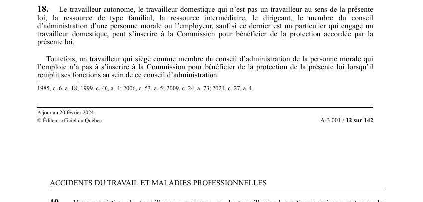

art-18-LATMP : inscription volontaire à la protection
Un article du wiki ⚖️ Recueil législatif
Texte de l’article (transcription)
Le travailleur autonome, le travailleur domestique non visé par la loi, la ressource de type familial ou intermédiaire, le dirigeant.
- Le membre du conseil d'administration.
- Inscription facultative pour étendre la protection à des personnes non couvertes d'office.
- Exception : le particulier employeur d'un travailleur domestique.
- Le membre du CA est dispensé pour ses fonctions au conseil.
🌐 LegisQuébec · 📄 PDF officiel (page 12)
Texte officiel : capture du PDF

Toucher l'image pour l'agrandir🔗 Ouvrir a cette page : LATMP.pdf : page 12 · texte a jour au 20 février 2024
Voir aussi
- art. 17 · les employés du gouvernement du Canada visés par la Loi sur l'indemnisation des agents de l'État sont soumis à la LATMP dans la mesure où une entente conclue en vertu de l'art.
- art. 19 · faculté : une association de travailleurs autonomes ou domestiques peut inscrire ses membres à la CNESST et est alors considérée leur employeur aux seules fins du chapitre IX (financement).
- art. 9 · le travailleur autonome qui, dans le cours de ses affaires, exerce pour une personne des activités similaires ou connexes à celles exercées dans l'établissement de cette personne est considéré comme un travailleur à son emploi.
- 🔧 Modifié par : LMRSST art. 4 · remplace art.
- ↑ Loi : LATMP
Pages qui pointent ici (7)
- art-17-LATMP : employés fédéraux (agents de l'État) Recueil législatif
- art-19-LATMP : inscription par une association ou un particulier Recueil législatif
- art-4-LMRSST : modifie l'art. 18 LATMP Recueil législatif
- art-6.1-LATMP : détermination du statut de dirigeant Recueil législatif
- Bénéficiaires de la LATMP Droit du travail
- Indemnités de remplacement du revenu (IRR) Droit du travail
- LATMP : Chapitre I : Application et définitions Recueil législatif